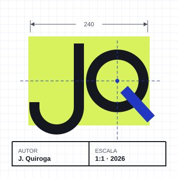
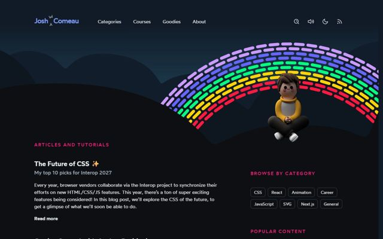
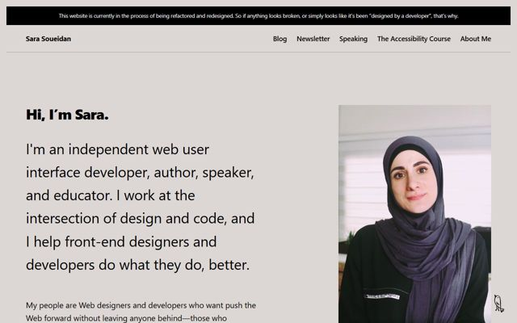
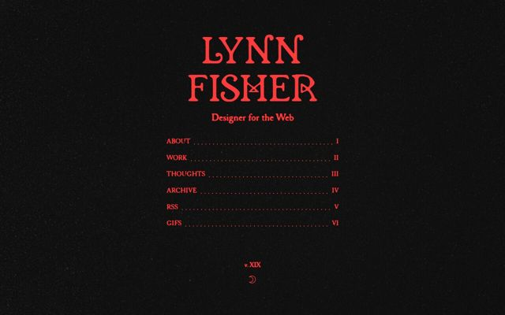
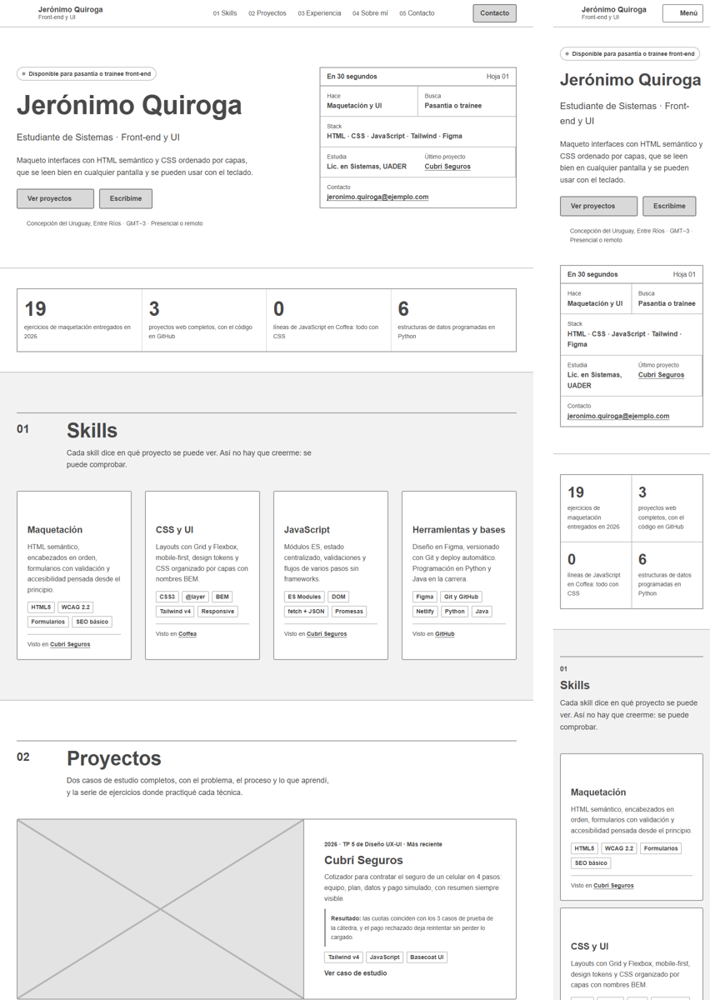
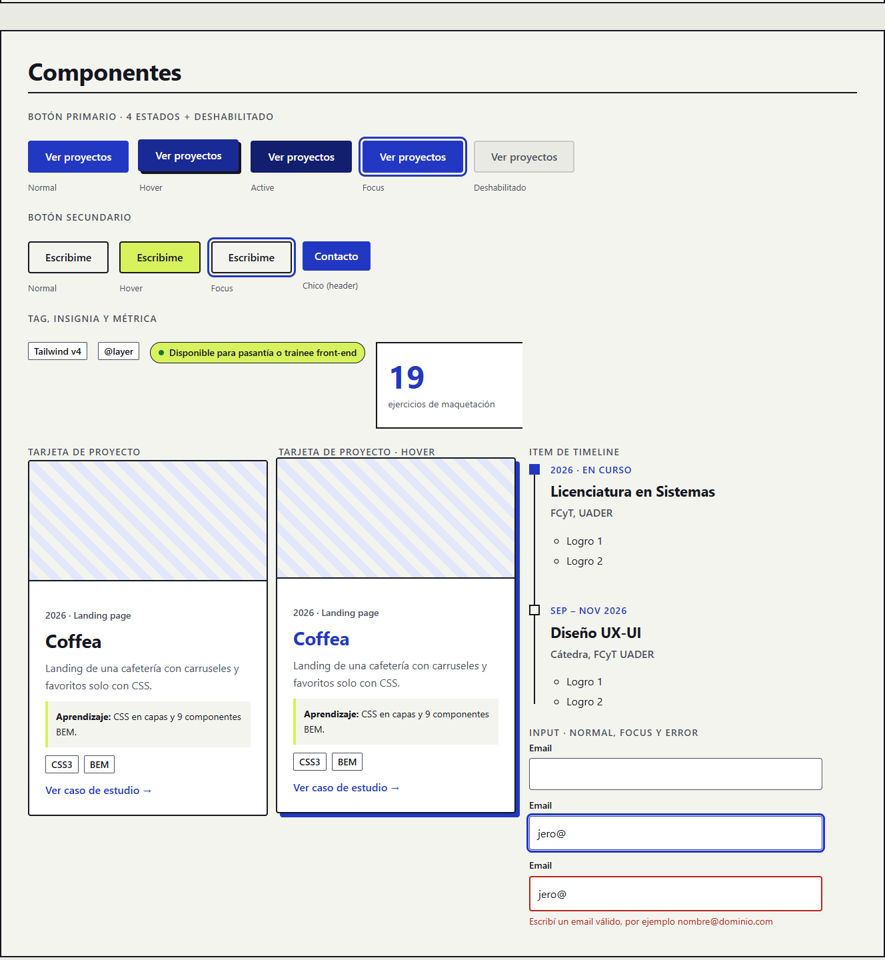
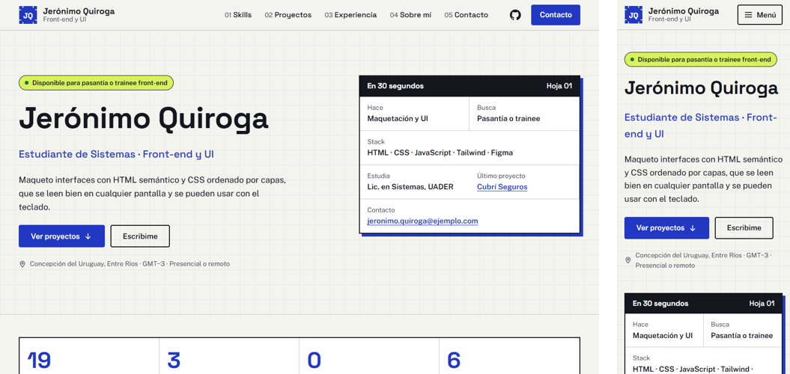

Diseño UX-UI 2026 · Trabajo final
Del usuario al sitio publicado. Licenciatura en Sistemas de Información, FCyT UADER.
1 · Usuario
Martín Godoy, 38. Tech lead front-end en una software factory de Paraná. Busca un trainee que escriba HTML y CSS que se pueda mantener.
Le molesta: tecnologías sin pruebas y no encontrar el contacto.
Hipótesis: no surge de entrevistas.
Abre el link desde LinkedIn, en la notebook, entre dos revisiones de código. En 30 segundos decide si abre un repositorio y le escribe, o si cierra la pestaña.
2 · Benchmark

Funciona: chips y etiquetas que ordenan la lectura.
No funciona: la portada es un blog; no hay proyectos ni contacto.
Me llevo: chips para tecnologías.

Funciona: qué hace, en una frase y con foto.
No funciona: mucho texto antes del trabajo; sin email en la portada.
Me llevo: propuesta en una frase.

Funciona: índice numerado claro e identidad fuerte.
No funciona: la portada no muestra trabajo.
Me llevo: navegación numerada.
3 · Concepto
Color: cobalto, tinta de plano.
Tipografía: Space Grotesk, geométrica.
Imagen: grilla de 32 px y el rótulo como ficha.
Color: pocos colores, cada uno con un rol.
Tipografía: escala fija de 14 a 64 px.
Imagen: cotas en el retrato.
Color: lima solo para disponibilidad y contacto.
Tipografía: Public Sans, muy legible.
Imagen: capturas reales de proyectos.
Distinto de la referencia oscura: fondo claro, esquinas casi rectas, sombras duras y numeración visible.
4 · Arquitectura
25 tarjetas en 5 preguntas: quién es, qué sabe, qué hizo, de dónde viene y cómo contactarlo.
HTMLCSSJavaScriptPythonJava
Hallazgo: Python y Java quedaban entre “qué sabe” y “de dónde viene”. Van en “Herramientas y bases” y en la línea de tiempo.
Decisión: Martín filtra por stack, por eso Skills va primero. Para que no sea una lista vacía, cada skill enlaza al proyecto que la demuestra.
5 · Wireframes

6 · Design system

El CSS está ordenado en capas (@layer) con nombres BEM, igual que Coffea.
7 · Alta fidelidad e implementación

Lighthouse mobile. Repetirlo sobre la URL publicada.
8 · Validación
| Tarea | P1 | P2 | P3 | P4 |
|---|---|---|---|---|
| Decir qué hace y qué busca, tras 30 s | ✅ | ✅ | ✅ | ✅ |
| Encontrar cómo contactarlo | ✅ | ✅ | ✅ | ✅ |
| Abrir el proyecto más reciente | ✅ | ✅ | ✅ | ✅ |
| Ir a Experiencia con el menú | ✅ | ✅ | ✅ | ✅ |
✅ sin dudar · ⚠️ dudó · ❌ no lo logró
Quiénes: 4 familiares. Antes del test dijeron que el portfolio está bueno.
Hallazgos: nadie dudó y nadie señaló algo confuso, así que no hubo cambios.
Límite: son personas cercanas; falta probarlo con alguien que evalúe perfiles.